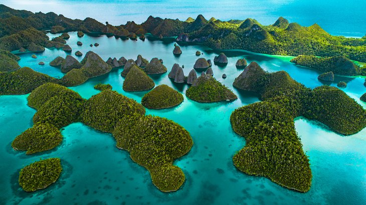

Tourist Attractions in Indonesia
Gunung Rinjani
Gunung Rinjani
Another of Indonesia's famed volcanoes, Gunung Rinjani is a top attraction on Lombok. Rinjani itself does not see the eruptions and activity that some of the others have, but its caldera-forming eruption in the late 13th century is believed to have been one of the most powerful in human history. A lake sits in Rinjani's caldera, and within the lake sits Mt.Baru, another active volcano. In Rinjani National Park, you may spot animals such as the rare black Ebony leaf monkey, long-tailed macaques, the sulfur-crested cockatoo, and other exotic species. Guided treks are available, and you can camp overnight in the park. The park does caution that treks are strenuous, so if you plan to hike the mountain, you should be in good physical health and be prepared with the appropriate equipment.
Beaches of Bali

Beaches of Bali
Arguably Indonesia's most popular vacation spot, Bali has a number of cultural landmarks and traditions that make a visit here worthwhile. But, for many people, Bali is about the island's beautiful beaches. If a beach vacation is what you're looking for, you may want to head to one of Bali's luxury beach resorts and spend some time soaking up the sun. Anyone who travels to Bali is going to have warm sand and blue water on their mind, and the island doesn't disappoint. Kuta is the best known beach, and is great for those who like to combine sun, surfing, and socializing. Because of its popularity, you'll find no shortage of restaurants and things to do here. If you're looking for something a little quieter and less crowded, Nusa Dua is still a beauty, but draws fewer tourists. Sanur is the place to go for a little more culture, as well as great water sports.
Kalimantan, Borneo
Kalimantan, Borneo
Few places suggest wild, untamed adventure like Borneo. One of the most ecologically diverse places on earth, Borneo is home to orangutans, exotic birds, Sumatran rhinos, pygmy elephants, and an array of other creatures. In Kalimantan, in Indonesian Borneo, you can travel down the Kapuas River, the longest in Indonesia; visit villages of the indigenous Dayak people; and observe foreign influences from China, Malaysia, and even Europe in the ports and cities along the way. You can also go trekking in the rainforest for a chance to see some of Borneo's famed wildlife in person. Bukit Baka-Bukit Raya National Park is a conservation area in West Kalimantan that includes two of the highest mountains in Borneo and supports wildlife such as orangutans, clouded leopards, slow lorises, sun bears, and many other species.
Raja Ampat
Raja Ampat
Raja Ampat The fairlyland of lush, cone-shaped islands set against blue and turquoise waters is one of Indonesia's most spectacular sights. Hundreds of islands and cays make up this tropical paradise, but the beauty extends beneath the surface as well. Colorful fish and a diverse variety of marine life thrive in the warm, clear waters. In fact, the coral reefs here are some of the most biodiverse on the planet, making it a popular area for diving in Indonesia.